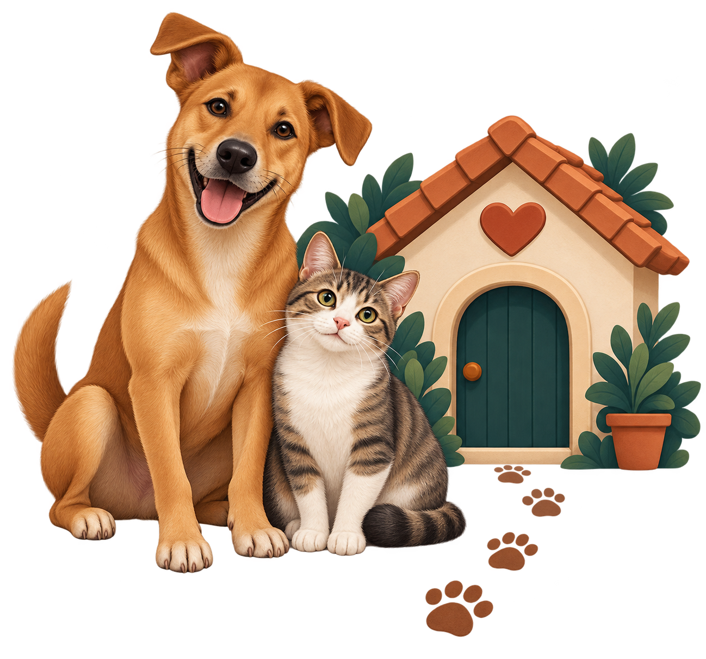

Cada focinho merece um segundo lar
A Patinhas do Amanhã resgata cães e gatos em situação de abandono, oferece cuidado veterinário completo e busca famílias responsáveis para cada adoção. Juntos, transformamos histórias de rua em histórias de lar.

Acreditamos que todo animal resgatado das ruas merece cuidado, dignidade e uma família para chamar de sua — por isso resgatamos, tratamos e encontramos lares responsáveis para cães e gatos em situação de vulnerabilidade.
Uma rede de voluntários por trás de cada resgate
Fundado por um grupo de voluntários apaixonados por animais, a Patinhas do Amanhã atua desde 2018 resgatando cães e gatos abandonados, oferecendo cuidados veterinários e conduzindo processos responsáveis de adoção.
Já resgatamos centenas de animais, realizamos mutirões de castração e vacinação, e encontramos famílias definitivas para dezenas de patas que só precisavam de uma chance.